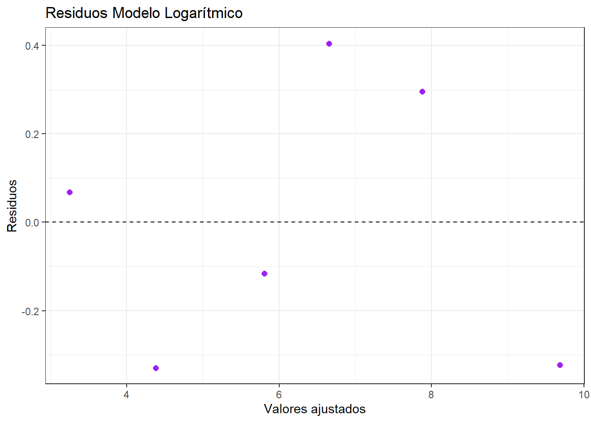

Chapter 3 Ejercicio 1 (Sec. 7.10)
Datos y modelos:
df2 <- data.frame(
x = c(0.01, 0.06, 0.58, 2.24, 15.55, 276.02),
y = c(3.32, 4.05, 5.69, 7.06, 8.17, 9.36)
)
mod_lin <- lm(y ~ x, data = df2)
mod_log <- lm(y ~ log(x), data = df2)
mod_raiz <- lm(y ~ sqrt(x), data = df2)a, b, c. Gráficos de residuos vs ajustados:
df2 <- df2 %>%
mutate(
fit_lin = fitted(mod_lin), res_lin = resid(mod_lin),
fit_log = fitted(mod_log), res_log = resid(mod_log),
fit_raiz = fitted(mod_raiz), res_raiz = resid(mod_raiz)
)
ggplot(df2, aes(x = fit_log, y = res_log)) +
geom_point(color = "purple", size = 2) +
geom_hline(yintercept = 0, color = "black", linetype = "dashed") +
theme_bw() +
labs(
title = "Residuos Modelo Logarítmico",
x = "Valores ajustados",
y = "Residuos"
)
El modelo conlog(x) es el más adecuado porque sus residuos se ven aleatorios, sin patrones de embudo o curvas sistemáticas.
d. Pronóstico para 50 m³ (con modelo log):
## 1
## 8.608607e. IC 95% para la media:
## fit lwr upr
## 1 8.608607 8.025373 9.19184